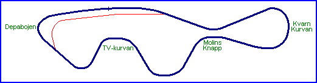

Kinnekulle
Road Course (1969+)

| Length | 1.286 Miles // 2.070 km |
| Direction | Clockwise |
Contact Information |
|
| Address | Kinnekulle-Ring Kinne-Kleva, 533 96 Götene |
| Telephone | +46 (0)511 58018 |
| Website | http://www.kinnekulle-ring.se |
racingcircuits.net - Lasted Updated: 07 November 2004 21:50:33 GMT Standard Time
Data
Sources
email - from Sal Chiappetta on Thu 04/11/04 22:25
Website - "Kinnekule Ring"; http://www.kinnekulle-ring.se